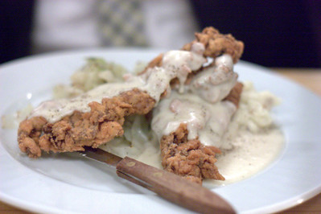

Chicken Fried Steak

Description
Chicken fried steak is an inexpensive and usually tough cut of beef that has been tenderized, battered, and fried, in the manner fried chicken.
Ingredients
- 3 lbs cube steak
- 2 cups flour
- 1 1/2 cups buttermilk
- 1/2 cup frying oil (shortening, lard, or butter)
- 2 tsp salt
- 1 tsp baking soda
- 1 1/2 tsp pepper
Steps
- Bring a skillet to medium heat and add 1/2 cup of frying oil.
- Mix flour, salt, baking soda, and pepper in a shallow dish.
- Pour buttermilk in another shallow dish.
- Designate one hand your "dry hand" and the other your "wet hand".
- With your wet hand, place a piece of steak into the dish of flour. Then, with your dry hand, coat the piece on both sides with flour and place the coated piece into the buttermilk dish.
- With your wet hand, thoroughly dredge the piece in the buttermilk and then place the piece back into the flour dish.
- With your dry hand, coat the piece on both sides with flour again, and place the piece into the skillet.
- Cook until the edges become golden, about 1 1/2 - 2 minutes each side.
- Remove the piece from the skillet, and place on a paper towel lined plate to drain.
- Repeat from step 5 until each piece is cooked.